南橫公路台南段0K起點位於中西區湯德章紀念公園，穿越12K山林之地 - 大目降貿易匯集地，走進26K堊地秘境發現臺灣化石寶庫「左鎮」的地質之美與淺山物產。
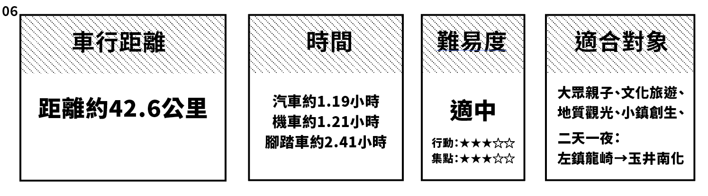
臺20南橫0K→台南火車站→*新化老街 / 立賀佇遮→ *左鎮零售市場40年鄉土味小吃（賴爸麻竹筍）→ *左達商號 → *公館社區協會Ｘ葛鬱金故事館
臺20南橫0K→台南火車站→新化養生藥膳園→時光廊道→噶瑪噶居寺→薪藝滿竹竹編工藝坊→左鎮教會（拔馬平埔文物館）→左鎮（公車站牌） / 嘮嘮咖啡 → 木瓜肉粽-阿娥 / 老街慶珍軒餅店 → 蔗埕公園 / 木瓜肉粽-阿祥→左鎮北極殿（阿立祖/玄天上帝）→澄山教會→山豹部落段木香菇園區 / 澄山山豹古道觀景台→岡林教會→二寮觀日平台（堊地）→小玉山（地形）→308高地（夕陽）
湯德章紀念公園（臺20南橫0K）→台南火車站→新化老街→左鎮（臺20南橫26K）→左鎮老街→葛鬱金故事館
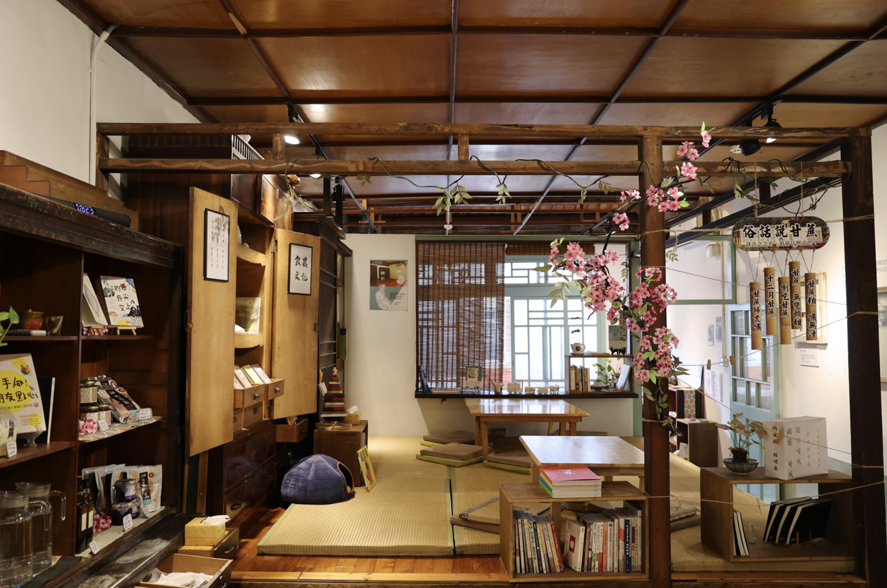
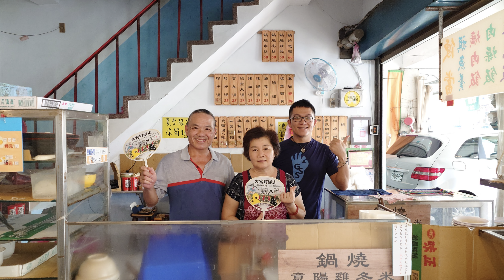
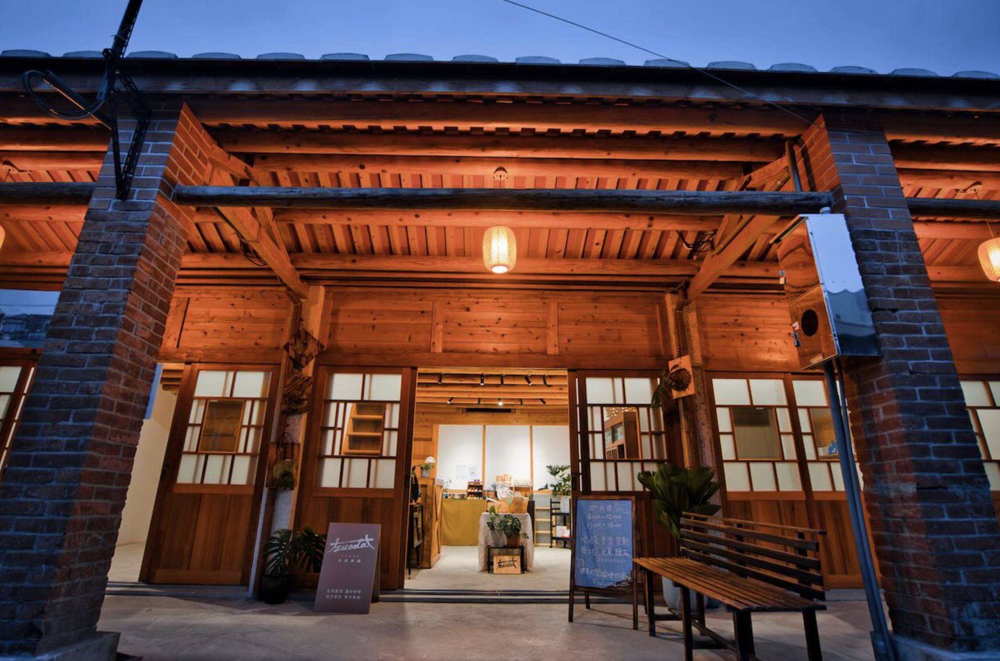
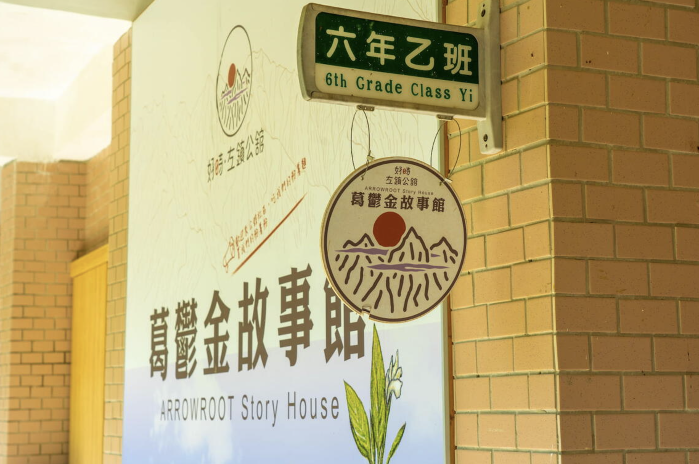
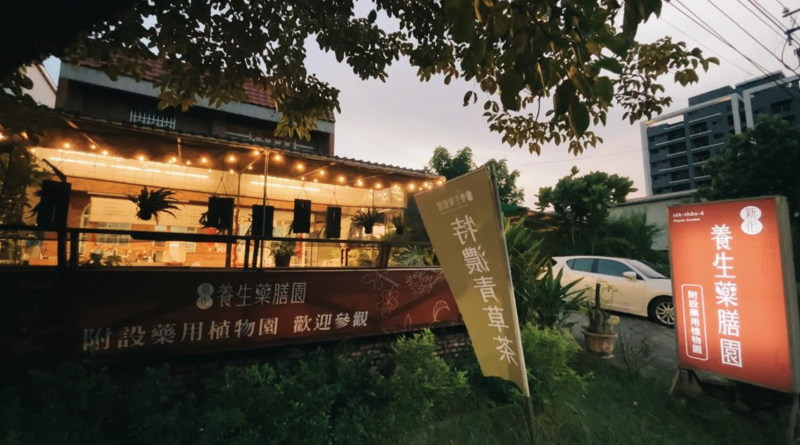
地點資訊：新化區全興里竹子腳177之12號
預約電話：0981-239-078
開放時間：10:00-19:00
小提醒：週二/三公休
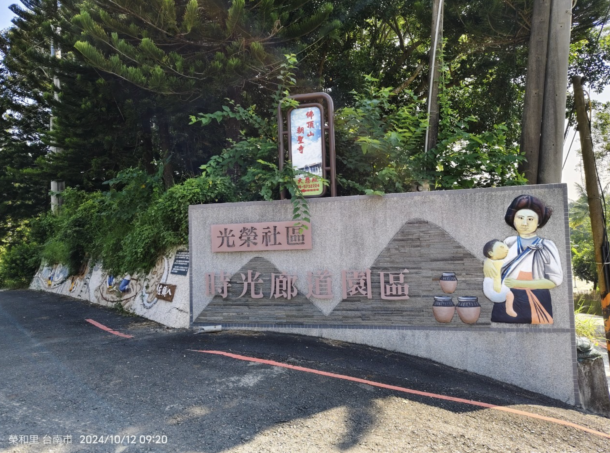
地點資訊：臺南市左鎮區611號
預約電話：無
網站（含社群）：google map
開放時間：24hr(可停車）
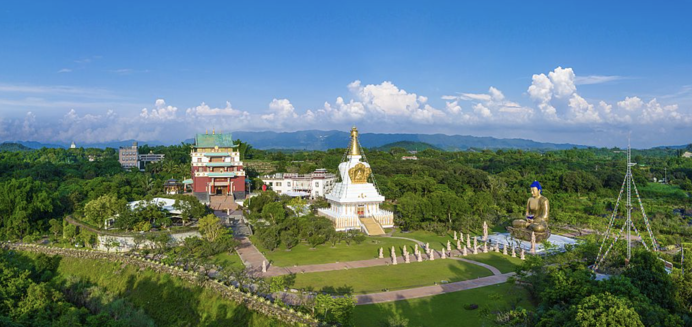
地點資訊：713台南市左鎮區左鎮里91-2號
預約電話： 06 573 2103
開放時間：09:00-16:00
小提醒：週二/三公休
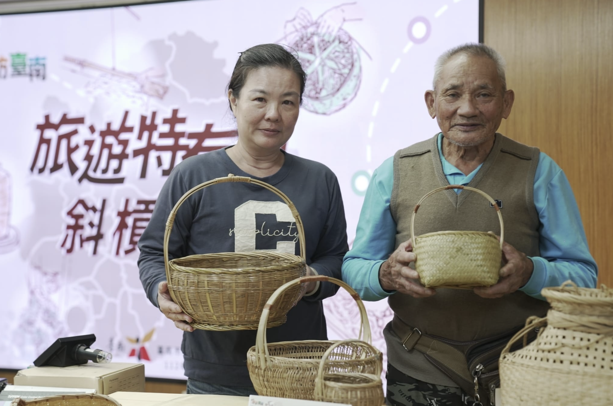
高齡84歲的竹藝師傅李天生及李芝熒，是自13歲起即擁有製作「竹籠茨」技術經驗的老師傅，製作竹編器皿已有70多年經驗，以臺南左鎮附ㄉ近山區的原生竹材進行編織，以多元的產品與工藝學習課程推廣竹藝文化。
地點資訊：台南市左鎮區中正里好180之2號
電話：0912 012 497
開放時間：週一至週六上午9:00~下午5:00
小提醒：週日公休
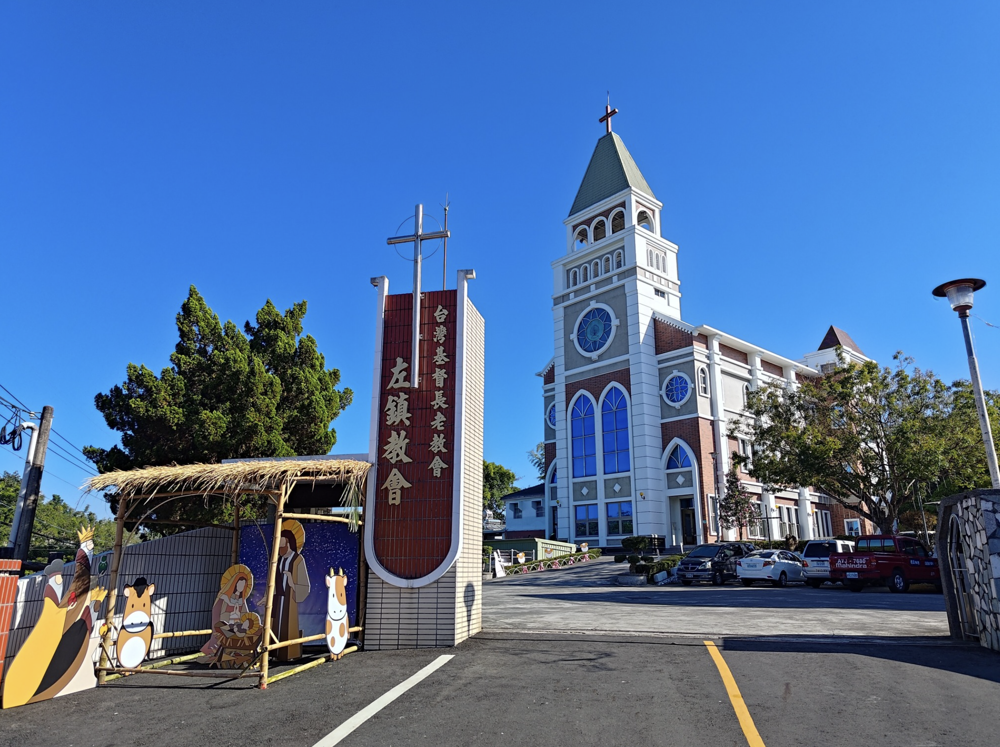
地點資訊：臺南市左鎮區左鎮里128號
預約電話：06-5731076
開放時間：事先預約
小提醒： (星期日上午主日禮拜時間不開放)
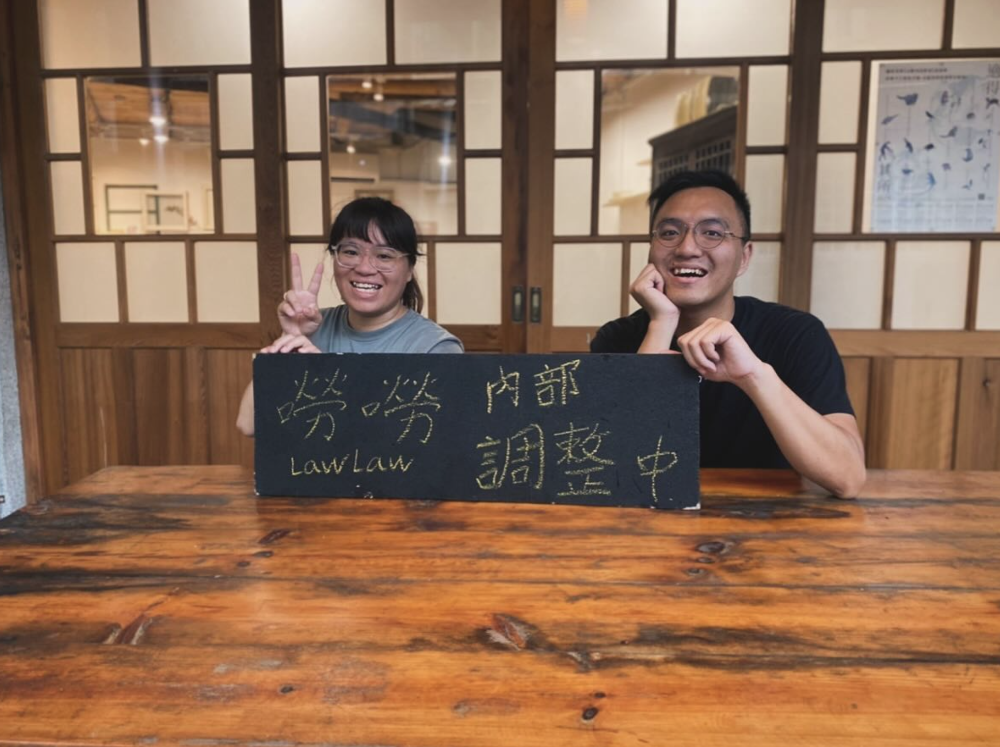
地點資訊：臺南市左鎮區113號
預約電話：0900 493 899
開放時間：10:00-18:00
小提醒：週二公休
地點資訊：臺南市左鎮區中正139號
預約電話：0921-225-620
開放時間：每週六日上午06:00-11:30（售完為止）
小提醒：週一～四公休，週五請電話確認
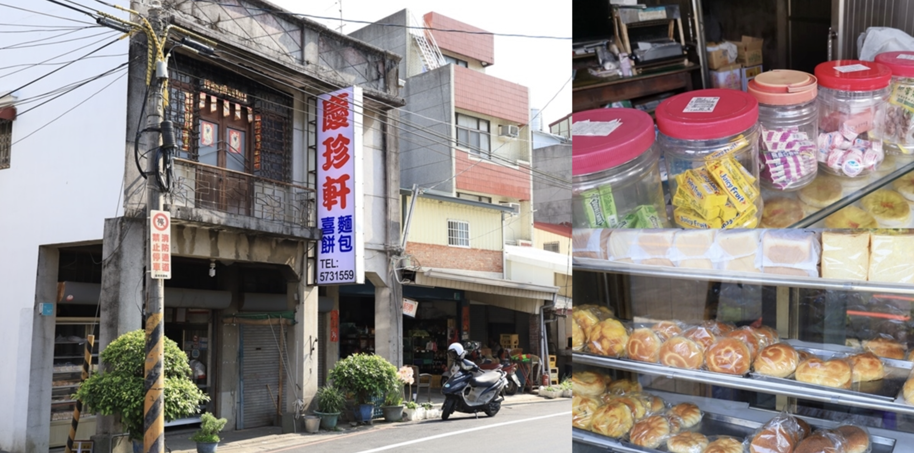
地點資訊：臺南市左鎮區中正里147號
預約電話：06-573-1559
開放時間：06:00-21:00
小提醒：原則上週一～日皆有營業
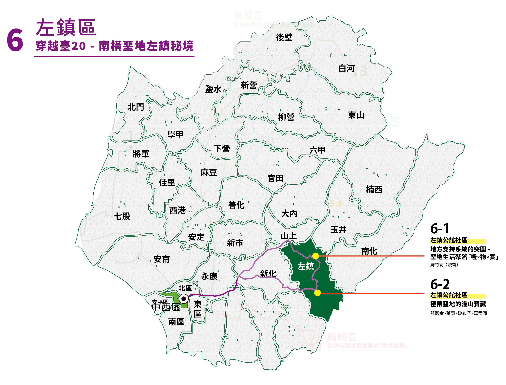
2019年臺南左鎮化石園區正式啟用之後，確實為左鎮地區帶來觀光人潮 ; 但是也因為缺少停留的餐飲週邊服務，往往客群也不容易再進一步往昔日老街聚集地及社區停留。
特派員想進一步認識左鎮的現在與過去，仰賴著網路的數位資訊做事前功課，從外景節目的專題拍攝、博物館合作留存的線上展覽、在地社區行銷的社群影像...等，漸漸的發現，在這些數位化資料的建立者及引路人，大多是來自左鎮當地的青年 - 賴政達，暱稱賴達。
公舘社區由二寮、草山、岡林三個里組成， 是早期為清代駐軍所在所稱舊名為「公舘」。
臺南市左鎮公舘社區發展協會成立於1996年，典型山村型農業社區，居住人口分散，位處於水資源保護區不利產業發展，境內多白堊土栽種不易，青年人口外流，高齡人口不斷成長 ;社區以向自然學習共處的淺山智慧，發展社區自有的物產品牌：葛鬱金、薑黃、破布子，並長年以『DOC數位導入地方』計畫累積地方故事與人物紀錄的影音資料庫。